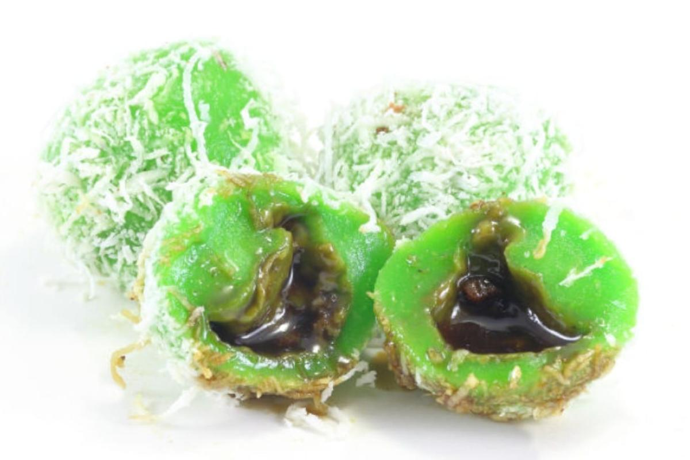

Ondeh-Ondeh Recipe

Description
Ondeh-Ondeh is a kuih that has pandan infused dough and filled with Gula Melaka or palm sugar.
They are rolled with grated coconut before serving.
Ingredients
- 65g of Sweet Rice Flour
- 2 tbsp of Tapioca Flour
- 1 tbsp of Pandan Extract
- 28g of Sugar
- 105g of Shaved Coconut Palm Sugar
- 50ml of Water
- 1 tsp Kosher Salt
Steps
- Sift the flours and mix it with salt, sugar and Pandan Extract till you get a nice ball of dough. Add another 1-2 tbsp of water as needed.
- Cut the dough into 12 pieces. Put them on a lightly floured surface.
- Flatten with your hands, put some shaved coconut palm sugar in it and roll it into a ball.
- In a pot of boiling water, add in the balls one by one, and stir lightly once or twice to keep them from sticking. As the balls cook, they start to float.
Cook for an additional 2 minutes once they float, and then using a slotted spoon, scoop the balls out.
- Coat the balls with shredded coconut and serve.
Back to Home